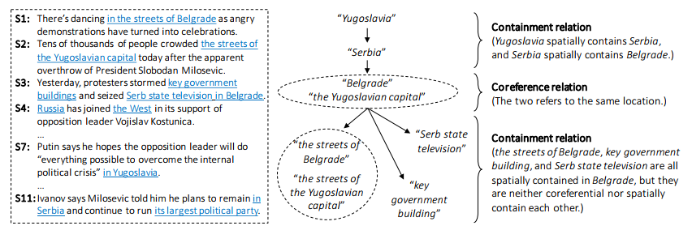
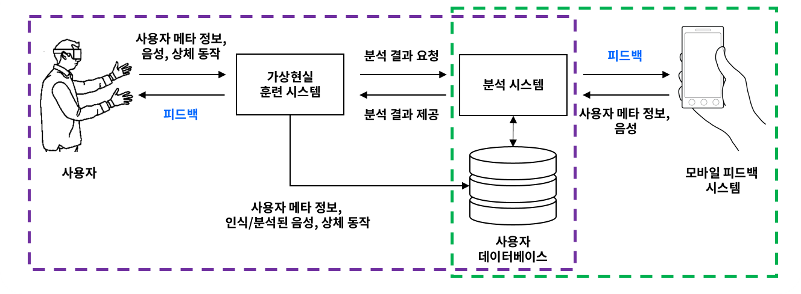

언어학적 분석 및 증거문서 자동 수집을 통한 신뢰도 분포 자동 예측 및 자동 증강 (2018-0-00582)
자연언어처리 및 계산언어학 연구실
한국과학기술원 전산학부 박종철
전화번호: 042-350-3541
연구실: 전산학동 2406호
본 연구는 주어진 문서를 읽을 때 독자가 의식적 또는 무의식적으로 진행하는 신뢰도 판단 과정에 대한 심층적인 언어학적 분석과 함께 주어진 문서와 관련된 증거자료의 자동 수집 및 대조 분석을 통해 주어진 문서가 얼마나 신뢰할 수 있는 문서인지를 자동으로 판단하기 위한 연구이다. 또한, 이런 신뢰도 판단에 그치지 않고, 주어진 문서가 왜 일반적으로 신뢰할 수 있는지/없는지에 대한 분석 결과를 기반으로 주어진 문서가 보다 더 신뢰받기 위해서는 어떻게 내용이 바뀌어야 하는지를 자동으로 파악하여 보다 신뢰할 수 있는 문서로 자동으로 첨삭/변형시켜주는 신뢰도 자동 증강을 도모하는 시스템을 구축한다.
본 연구팀은 주어진 문서를 얼마나 신뢰해야 하는지를 자동으로 파악하는 것이 현재 전세계적으로 큰 관심을 끌고 있는 가짜 뉴스 문제에 대한 궁극적인 해결안이 될 것이라 예상한다. 진짜/가짜의 문제는 단순한 흑백 논리로 접근될 수 없으며, 주관적인 신념으로부터 명확하게 분리되어 개념화될 수 없다. 이는 독자 개개인은 주어진 정보를 “거부”할 자유를 가지며, 이런 거부의 과정은 “이것은 가짜이다”라는 개인적 판단과 동시에 또는 별개로 진행될 수 있기 때문이다. 이런 판단의 과정은 획일화된 방법론과 이론을 통해 정의할 수 없는, 주관적인 신념과 관련된 요소들을 포함한다.
“신뢰”라는 개념은 이런 주관적인 신념과 관련된 개념들을 내포하고 있으며, 또한 문서의 질과 설득력에 대한 개념 역시 내포하고 있다. 또한 “신뢰”라는 개념은 참/거짓을 판단하는 인지적 과정과 밀접한 관련을 갖는데, 주어진 말의 참/거짓을 판단하는 과정은 전통적인 언어학 중 의미론(semantics)의 근간을 이루는 개념이다. 일례로, 전통적인 의미론에서 “문장의 해석”은 “사람이 참/거짓 값을 판단할 수 있을 정도로 상세화된 정보 도출”로 정의된다. 또한 “신뢰” 혹은 “참/거짓”을 인식하는 과정과 사람이 의사소통을 하는 데 있어 암묵적으로 동의하는 화용론적 규칙(pragmatic rules)들은 밀접한 관련을 가지는데, 구체적으로 언급하지 않았더라도 내포하고 있는 의미의 전달, 어떤 정보를 강조하거나 생략하였다면 그 이면에 내재된 이유는 무엇인지, 어떤 정보를 상세하게 기술하였다면 그 이유는 무엇인지 등에 대한 추론 과정 등은 대화 상대 혹은 문서의 저자에 대한 신뢰도를 판단하는 과정과 밀접하게 관련된다.
이에 있어 본 연구는 깊은 언어학적 이해를 바탕으로 문헌 분석, 증거자료 수집, 신뢰도 예측, 신뢰도 증강을 수행하는 자동 시스템을 구축한다. 또한 주관적인 신념의 작용과 객관적인 증거 자료들의 상호작용과 관련된 인간-컴퓨터 상호작용을 분석함과 동시에, 사용자에게 최적화된 신뢰도 판단/증강 보조도구를 개발한다.
이런 연구를 통해, 상대방이 말하는 것을 듣거나 누군가가 작성해놓은 글을 읽을 때에 신뢰도 판단과 관련한 일련의 인지 과정을 보다 편안하게 느낄 수 있도록 하는 것을 하나의 목적으로 하고, 이와 함께 상대방에게 보다 더 신뢰를 줄 수 있는 말을 하도록 자동화된 시스템의 기계적 보조를 받는 것을 또 하나의 목적으로 삼는다. 궁극적으로 본 연구는 이를 통해 문서/말/대화와 관련된 일상 생활 중 일어나는 삶의 질을 향상시키고자 한다.
본 연구를 통해서 구축될 자동화된 시스템을 통해, 더 편안하고 더 빠르고 더 확실하게 상대방이 전달하는 정보에 대한 신뢰도를 파악하고 더 편안하고 더 빠르고 더 확실하게 상대방에게 신뢰할 수 있는 정보를 전달할 수 있도록 하는 것이 가능해질 것이라 기대한다.
문헌으로부터의 정보 추출 및 증거자료 자동 수집

주어진 문서에 대한 신뢰도를 보다 정확하게 판단하기 위해서는, 주어진 문서와 관련된 “바깥 정보”를 최대한 풍부하게 파악하는 것이 필요하다. 정확한 신뢰도 판단을 위해서 문서 내에 언급된 정보들 각각은, 주어진 문서의 저자와 독립적인 출처로부터 뒷받침 자료가 존재하는지, 반박 증거가 존재하지는 않는지, 관련하여 다른 사람들은 어떻게 생각하고 있는지 등의 주변 정보와 대조 비교되어야 한다. 이와 같은 대조 비교 과정을 자동화하기 위해서는 관련된 증거자료들을 문헌으로부터 자동 추출, 수집, 정리하는 시스템이 우선적으로 확보되어야 한다. 비정형 문헌으로부터의 정보 추출, 수집, 정리와 관련된 연구는 의학/질병/생명 관련 문헌에서 주로 발전되어 왔는데, 그 이유는 다음과 같은 네 가지 이유로 정리될 수 있다: (1) 질병 치료라는 핵심적 가치와의 연관성, (2) 질병 치료 목적으로 정교하게 제작된 대규모 검증 데이터의 가용성, (3) 대규모로 증가하는 생명 관련 연구 문헌의 관리라는 실용적인 필요성, (4) 일상 문헌에서의 정보 추출 대비 높은 난이도. 본 연구팀은 이러한 의학/질병/생명 관련 정보 추출, 수집, 정리, 시각화에 있어 세계적 수준의 원천 기술을 보유하고 있으며 일상적인 정보에 해당하는 뉴스 데이터, 소셜 네트워크 데이터, 감정 관련 대화 등에 대해서도 높은 수준의 정보 추출 기술을 보유하고 있다.
자동 주석을 통한 신뢰도 강화

수집된 증거자료를 단순히 주어진 문서 내의 문장들에 주석하는 것만으로도 주어진 문서의 신뢰도를 강화할 수 있다. 이는 특히 자동으로 수집된 증거자료의 출처가 높은 신뢰도를 가질 경우 그 효과가 크다. 또한 수집된 증거자료가 전문 정보일 경우 단순히 주어진 문서의 신뢰도를 증강하는 것뿐만 아니라 자세한 심화 정보를 동시에 확인할 수 있도록 하는 이점 역시 가진다. 자동 증거자료 주석을 통한 신뢰도 증강과 심화자료 보충의 일례로 본 연구팀은 웹 상의 암 관련 건강정보에 국립암센터의 암 관련 전문 자료를 자동으로 주석하는 인공 신경 정리 증명계를 구축하여 실용성을 포함한 기술적 가치에 대한 평가를 받았다. 높은 신뢰 출처를 가지는 뒷받침 자료를 자동으로 주석하고 심화 자료를 보충하는 시스템은 그 자체로서 실용적 가치를 가지는 비교적 단순한 형태의 신뢰도 판단 보조 시스템으로 간주될 수 있으며 보다 종합적인 신뢰도 판단/증강 보조 시스템의 개발에 있어서도 하나의 모듈로서 중요한 역할을 한다.
암시 정보 추출 및 문헌 분류

문서 내에서 특정 정보가 직접적으로 언급되었는지 암시적으로 언급되었는지를 구별하고 문서 내에서 암시적으로 드러난 정보를 자동으로 추출하는 기술은 신뢰도 판단/증강에 있어서 중요한 역할을 한다. 우선 정보가 직접적으로 전달되었는지 암시적으로 전달되었는지 여부는 문장의 참/거짓을 판단하는 언어인지적 과정과 매우 밀접한 연관을 가진다. 또한, 증거자료 자동 수집 시스템의 성능 향상을 위해서 역시 암시적인 정보 전달을 포함하여 증거자료를 수집하는 것이 필요하다. 인간은 문서나 대화를 통한 의사 전달의 과정 중, 문맥을 통해 유추 가능한 정보는 최대한 생략하는 경향이 있는데, 일례로 뉴스 내에서의 사건 공간 정보의 경우 약 40%에 해당하는 사건이 직접적으로 공간 정보가 명시되어 있지는 않지만, 문맥을 통해 유추 가능하다는 점이 본 연구팀의 연구를 통해 밝혀졌다. 이와 같이, 문맥을 통해 유추 가능한 정보를 생략하도록 할 때, 그 대상을 어떤 정보로 삼을 것인지 (예를 들어, 핵심 사건 정보를 문맥을 통해서만 유추되도록 둔 상태로, 직접 언급하지는 않을 것인지) 여부는 문장의 참/거짓 판단에 있어 영향을 준다. 본 연구팀은 이런 암시적인 정보를 자동으로 추론하는 세계적인 수준의 원천 기술을 보유하고 있으며, 이를 신뢰도 판단/증강 시스템의 중요 모듈로 연구하고 있다.
언어 사용 패턴 분석 및 의사소통 보조

본 연구는 주로 문서 형태로 주어진 말에 대한 신뢰도 판단과 증강 기능을 구현하는 것에 중점을 두고 있다. 이런 문서 형태로 주어진 말에 대한 신뢰도 판단과 증강 기능은 일상 생활 내에서 신뢰도와 관련된 의사소통 보조 기능 제공을 위한 원천 기술로서 활용될 것이다. 본 연구팀은 일상 생활 내에서, 모바일 기기와 웨어러블 디바이스를 활용하여 사용자가 듣는 말에 대한 신뢰도를 자동으로 실시간 파악하고, 사용자가 하는 말의 신뢰도를 자동으로 증강 보조 해주는 소프트웨어를 개발하고자 하는 응용 시스템의 일부로 추진한다. 이와 관련하여 본 연구팀은 개인의 언어 사용 패턴 분석을 통해, 우울증 모니터링, 언어 장애 자동 진단, 직업 환경 내에서의 의사소통 보조 등을 위한 모바일 어플리케이션을 개발하는 연구를 진행해왔다. 특히 직업 환경 내에서의 의사소통 보조를 위한 모바일 어플리케이션의 경우 신뢰도 향상을 위한 의사소통 보조 어플리케이션을 위한 핵심 모듈로 기능할 것으로 예상한다. 또한 본 연구는 신뢰도 판단/증강 보조를 일상 생활 내에서 실시간으로 진행함에 있어, 어떤 형태의 인간-컴퓨터 상호작용이 가장 효과적일 지와 관련된 연구를 수행한다.
구성원


jsyou@nlp.kaist.ac.kr
근거자료 자동 수집 및 식별
derrick0511@nlp.kaist.ac.kr
언급되지 않은 정보의 추론을 통한 신뢰도 추정

hysong@nlp.kaist.ac.kr
언어학적 분석을 통한 텍스트 분류
jae4258@nlp.kaist.ac.kr
언어학적 분석을 통한 신뢰도 예측

ada@nlp.kaist.ac.kr
졸업생 취업현황
- 졸업생 수: 총 33명
-
박사 졸업생 6명
- 김정재 (싱가포르 Institute for Infocomm Research)
- 이호동 (삼성 종합기술원 연구원)
- 이호준 (유원대학교 교수)
- 민혜진 (네이버)
- 이희진 (University of Texas at Houston 박사후연구원)
- 정진우 (박사후연구원)
-
석사 졸업생 27명
- ETRI, 구글 코리아, NHN Entertainment, 5ROCKS (CEO), 삼성전자, LG CTO 등
성과
커뮤니티 홈페이지: http://credon.kaist.ac.kr
성과 공개: https://github.com/nlpcl
홍보
-
학술대회
- Language in Biology and Medicine (LBM) 5회 개최
- Korea-Singapore Joint Workshop 12회 개최
- Korea-Europe Joint Workshop 3회 개최
-
언론
- 2018년 SW 스타랩 선정 (etnews, 대덕넷, 지디넷코리아, MK News, 디지털타임즈)
- OncoSearch: 암 관련 유전자 검색 엔진 개발
- 중앙일보: https://news.joins.com/article/14752319
- 동아뉴스, 동아사이언스: http://dongascience.donga.com/news.php?idx=4506
- 국민일보: http://news.kmib.co.kr/article/view.asp?arcid=0008349006
- 연합뉴스: http://www.yonhapnews.co.kr/society/2014/05/22/0706000000AKR20140522051100017.HTML
- BRIC: http://www.ibric.org/myboard/read.php?Board=news&id=245056
- MEDICAL Observer: http://www.monews.co.kr/news/articleView.html?idxno=73688
- 사이언스타임즈: http://www.sciencetimes.co.kr/?p=124538&cat=36&post_type=news&paged=469
- 그 외 17개 기사(디지털타임스, 데일리뉴스, 산업일보, 머니투데이 등)
-
석사 졸업생 27명
- ETRI, 구글 코리아, NHN Entertainment, 5ROCKS (CEO), 삼성전자, LG CTO 등
Contact
Natural Language Processing and Computational Linguistics Laboratory
School of Computing, Korea Advanced Institute of Science and Technology (KAIST)
291 Daehak-ro, Yuseong-gu, Daejeon 34141, Republic of Korea
Tel: (+82) 042-350-7741, Fax: (+82) 042-350-7841